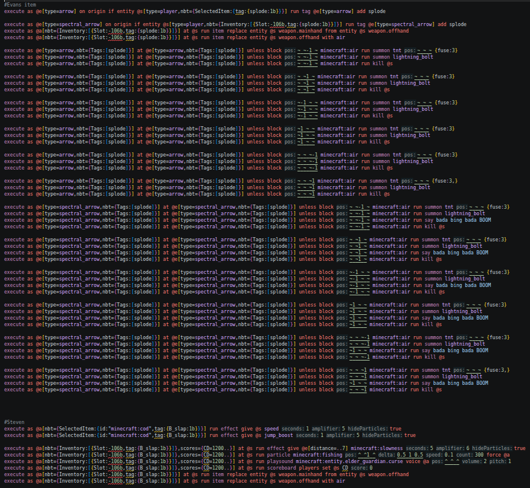
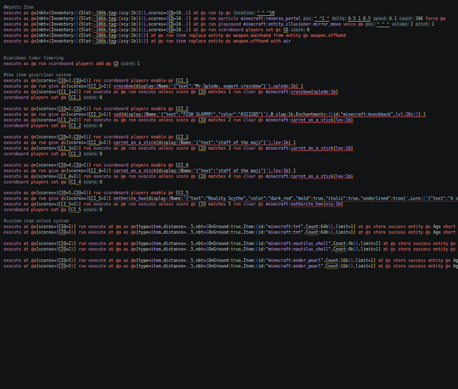
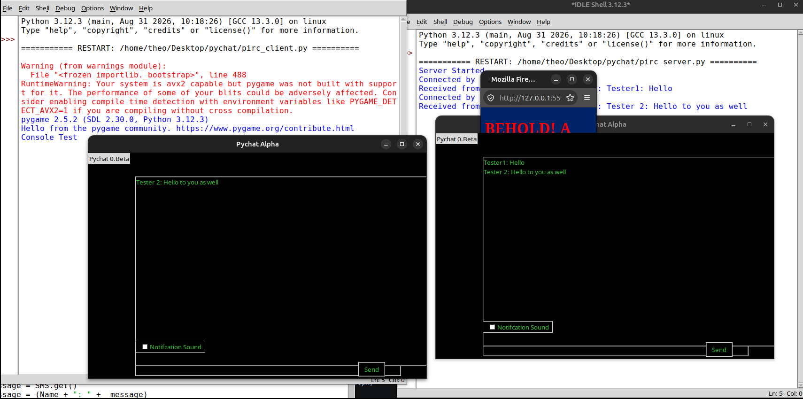
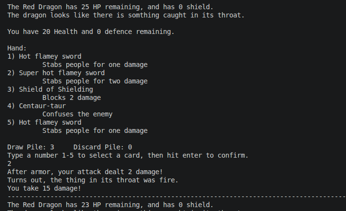

This was a project of several years ago, in my early days of programming. It was one of my first major undertakings in a large-scale project, and I spent quite a bit of time on it. The task was to make a pack for a Minecraft server, with a custom-built item for each player, a system to manage the item's production and removal, and a way to unlock the item. Feel free to right click and open the img in a new tab to try to read the code. A minor note is that it was made for an old version, so the up-to-date editor where I took the screenshot registers some things as errors when they actually aren't. Please ignore the alleged errors, the code works.

Please pardon the rooster pop-up (from the shenanigans page). He's there to obstruct my ip address from the server connect message. Despite me demonstrating with both instances on one computer, this was in fact a functional LAN WI-FI chatroom. Some friends and I were in a Python class in high school, sat on opposite sides of the room and got bored during the final weeks. As a result, we decided to create a chat room to talk and generally mess around. It is in two parts, a client and a server. Every chatter runs the client, and whoever is hosting runs the server as well. The IP of the host does need to be manually edited in the code of the server, but once it's there you just boot it up, choose a name, and connect. We even added notification sounds, custom UIs, and shortcuts for emotes and common phrases, and direct name mentions. Some prankster even made an invisible message they could send that would blare the metal pipe sound in everyone's ears. As we each made our own custom client based off the basic core, many ideas were tested and developed. Was it internet-level-secure? Almost certainly not, but thankfully it was just a wifi procedure, and didn't actually have any internet access. If it did, the school WI-FI security would likely have blocked it.


This website is actually my second html project. My first one was a simple password login that redirected you to another page when given valid login info. In reality, it's not particularly secure since the username and password it wants are stored in plaintext in the GitHub repository code, but it wasn't meant to be a real security measure, just a brief experiment with html and GUI interface designs. I added a link to a webnovel I was writing at the time just for the fun of it (Unfortunately the book is on an indefinite pause due to rewrites taking a long time and interest fizzling out.) I'm honestly not great at writing, I can make a cool magic system, but putting it into a story is a lot harder.

TexDeck was a text-based deckbuilding game, inspired by Slay the Spire and Inscryption, produced in python, with some cards and jokes taken from various media I watch, such as the gravity falls episode "Dungeons, Dungeons, and more Dungeons". I made it for prep week 2 of Hackclub, and it was a fun challenge building the engine, though later production lost some momentum as it transitioned from engine-code to game design, which is much further from my typical range of talents.


My week 2 project for Terra, Fogsired is the beginnings of a first person combat game, featuring throwing knives, a foggy map, and push-pull powers inspired by the MISTBORN trilogy.
While the enemies aren't fully fledged and hostile, I made a part of the game that would be a tutorial, and should be enough to let you try out the mechanics I spent the week implementing. Most of the movement mechanics were functional,
and the combat system for enemies being able to die does work, I just ran out of time to actually make them fight back.
A weird amount of time making the game was spent flicking back and forth between the code and Godot's launcher, testing the movement and seeing what felt right and what still needed adjustments. Eventually it got somewhere I was mostly happy with. Also, the Glif files from blender hate me.
Like, a lot. They crashed the whole project and I had to go re-download my last checkpoint from my github upload of the previous day.
:(